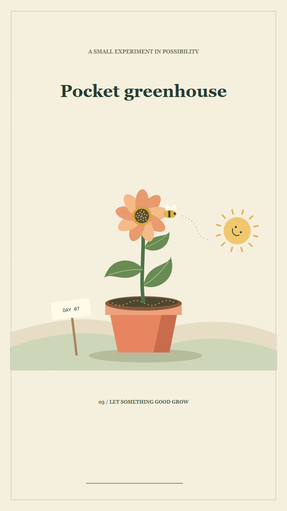

01 / PAPER WORLD / 16 SECONDS
Pocket greenhouse
A seed, a little rain, and a visitor with very good timing. A story told through growth, texture, and small physical details.
A LITTLE TOOL FOR BIG IDEAS
A pocket studio for stories made with code. Draw a scene, add a little sound, and turn it into a film you can keep editing.
FIELD NOTE 001

THREE WAYS TO PLAY
Original illustrations. Original scores.
Every frame comes from a drawing you can edit.
01 / PAPER WORLD / 16 SECONDS
A seed, a little rain, and a visitor with very good timing. A story told through growth, texture, and small physical details.
02 / VISUAL EXPLAINER / 16 SECONDS
Follow the orange point around a circle. Keep its height, trace its past, and watch a wave appear. A small explanation that moves.
03 / PIXEL COMEDY / 16 SECONDS
One robot. One parcel. One door with surprisingly high standards. Sometimes all you need is a different perspective.
A SMALL, OPEN TOOLBOX
A project is a timeline and a Canvas drawing. Shapes, characters, charts, paper worlds — the scene is yours.
Open a self-contained HTML player. Pause, seek, replay, and make the timing feel right before exporting.
Render H.264 video in wide, tall, or square. Add a procedural score, your own narration, and timed captions.
YOUR FIRST LITTLE FILM
Start from an example, or bring your own idea. Looplilt works with plain JavaScript and includes a skill for compatible coding assistants.
Read the setup guide ↗git clone https://github.com/alaaNfissi/Looplilt.git
cd Looplilt
node bin/looplilt.mjs init my-film
node bin/looplilt.mjs build my-film --out my-film.htmlOpen my-film.html in your browser.
HTML previews need Node 22+. Video export also needs Playwright, Chromium, and FFmpeg.
Make a tiny film. Share the source. Give someone else a starting point.
Get Looplilt on GitHub